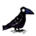
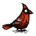
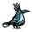
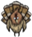
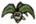
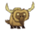
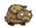
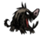
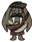

{kind=link}
stuck outside will fall asleep.
Continues to follow until the next day.
| “ | It's getting late. It will be dark soon. | ” |
| –Wilson | ||
The lightest portion of the Day is generally the safest and also the time when most Animals are active. Spiders and Spider Warriors sleep during the Day, and Pigs roam outside their houses. Merms are less common during the Day phase, and this is the only time Red Mushrooms sprout up to be picked. Crops in Farms are only grown in daylight.
At Dusk, Bees, Butterflies, Frogs, Gobblers, Pigs, Rabbits, and Tallbirds all return to their homes until morning. Spiders and Mosquitoes become active at this time while Beefalo move closer together as a herd. Merms are much more active at Dusk than any other phase. Bunnymen will also come out of their houses during this phase and stay out until daybreak. Pigs who are trapped outside at Dusk will panic and run around searching for light. The temperature begins to drop as well, and Green Mushrooms sprout to be picked. Dusk drains a character's Sanity by 5/minute.
When Night falls, the world quickly turns black. Most neutral and passive mobs still outside go to sleep on the spot. Redbirds, Snowbirds, and Crows who do not take flight before night comes settle down to sleep. Most aggressive mobs continue to be active at night. A light source is required during this phase not only to see, but also because the Night Monster (AKA the Grue or Charlie) will attack in complete darkness. Also, in total darkness, the character cannot interact with anything, including putting Campfires and Fire Pits down, and Sanity drains at rate of 50/minute. While close to an active light source, sanity drains at 5/minute. Night is the coldest phase and the time when Blue Mushrooms, the rarest of the three mushrooms and a potent healing item, may be picked.
Surface mobs not listed here have the same behavior throughout the day, despite the phase.
| Mob | Day | Dusk | Night |
|---|---|---|---|
| | Spawns from flower, and flies around aimlessly. | Retreats to nearest flower and despawns. Keeps flying aimlessly if there are no flowers nearby. | Retreats to nearest flower and despawns if released from player. Keeps flying aimlessly if there are no flowers nearby |
| | Doesn't spawn from flowers. Retreats to nearest flower and despawns if released from player. Keeps flying aimlessly if there are no flowers nearby. | Retreats to nearest flower and despawns if released from player. Keeps flying aimlessly if there are no flowers nearby | Retreats to nearest flower and despawns if released from player. Keeps flying aimlessly if there are no flowers nearby |
| Leaves the hive to gather honey from nearby flowers. | Heads back into hive. Continue to pollinate any flowers, evil or not, if stuck outside. | Stay inside hive or fall asleep if homeless. | |
| Stays inside hive unless provoked. Continue to pollinate any flowers, if stuck outside. | Stay inside hive unless provoked. Continue to pollinate any flowers, if stuck outside. | Stay inside hive unless provoked. Any and all bees
stuck outside will fall asleep. | |
| Leaves Bee Hive only when hive or bees are attacked. Leave Killer Bee Hive when player is nearby or hive is attacked. | Head back to hive. Flies aimlessly if stuck outside. | Stay inside hive or fall asleep if homeless. | |
| Stay inside Pond . Flies aimlessly if released from player. | Leaves pond and fly near it. | Keeps flying near pond. | |
| Stays inside frozen pond. Flies aimlessly if released from player. | Stays inside frozen pond. Flies aimlessly if released from player. | Stay inside frozen pond. Flies aimlessly if released from player. | |
|  Summer Only Winter Only | Occasionally lands on the ground. Mobs that get near will scare a bird into taking flight. | Continues to fly and land. | Takes flight, though sometimes a bird left on the ground will go to sleep. It won't wake up when other creatures get near. Birds in Birdcages go to sleep unless the player offers them something. |
|  | Spawns from Berry Bush . Wander around looking for berries. | Runs to nearest Berry Bush to hide. Wanders aimlessly if no bushes are nearby. | Falls asleep if no bushes are nearby. |
| Leaves hole to wander. | Retreats to hole. Wanders aimlessly if left outside | Falls asleep if left outside. | |
|  | Dies instantly when picked. When picked the dusk/night before, it replants itself. | Becomes a follower when picked. |
Continues to follow until the next day. |
| Comes out of pond and roams near it. | Goes back inside pond. Stays idle if no pond is nearby. | Stays inside pond. Stays idle if no pond is nearby | |
| Stays inside frozen pond. Roams around if left outside. | Stays inside frozen pond. Stays idle if left outside. | Stays inside frozen pond. Stays idle if left outside. | |
|   | Roams around, generally in a savannah biome. | Beefalo huddle together. | Beefalo fall asleep. Babies roam near their parents. |
| Roams around its nest . | Returns to nest to sleep. | Keeps sleeping in nest. | |
| Follows the player. Only if hatched from a Tallbird Egg. | Keeps following the player. | Fall to sleep if player is not moving away from it, otherwise keeps following the player. | |
| Can spawn from the ocean . Walks toward its nesting ground, if not already on it, otherwise roams around the nesting ground. | Can spawn from the ocean. Walks toward its nesting ground, if not already on it, otherwise roams around the nesting ground. | Can spawn from the ocean. Falls asleep. | |
|  | Wanders around looking for things to bite. | Keeps wandering around looking for things to bite. | Falls asleep if there are no things around to attack. |
| Wanders around looking for things to steal. Hops into his sack after a while. | Keeps wandering around looking for things to steal. Hops into his sack after a while. | Falls asleep. | |
|  | Roams around the landscape. | Returns to Igloo | Stays inside Igloo or falls asleep if left outside. |
| Wanders around and away from home. | Returns to home. When following or homeless, they become anxious when there's no light source but gather around one. | They enter their houses. Following Pigs will fall asleep unless they are threatened by hostile mobs. | |
| | Wanders around and away from home. | Returns to home. When following, they become anxious when there's no light source but gather around one. | Continues to huddle against a light source while shivering. |
| Stay inside their hutch or fall asleep if stuck outside. | Leave to wander around and away from home. | Continue wandering. | |
| | Hide in their Spider Den and comes out only when creatures step on a web. If exposed to light for too long, they get scared and go home. | They exit their nests and wander a short distance away, looking for food. At this time if you are close to a spider, it will attack, and even call nearby spiders to the fight. | They continue wandering around their base. |
| Can spawn from Evergreen. Roams around aimlessly if neutral. | Can spawn from Evergreen. Roams around aimlessly if neutral. | Can spawn from Evergreen. Falls asleep if neutral. | |
| Can spawn from Spider Den. Roams around aimlessly if neutral. | Can spawn from Spider Den. Roams around aimlessly if neutral. | Can spawn from Spider Den. Falls asleep if neutral. |
The amount of daylight varies throughout the game. In mid-Summer (starting around Day 3) the Day phase is more than half of the total clock, while Night lasts only 2 segments. In Winter, Night is about 1/3 of the clock and Dusk nearly half. One complete cycle of the seasons lasts 36 days; 20 Summer and 16 Winter. Below is a chart showing the amount of each phase throughout the seasons:
Day/Night Cycle
A brightly lit part of a Cave meaning it's the day phase.
Caves have a unique Day-Night Cycle. Time doesn't pass the same as it does on the surface, but there's still a Day-Night cycle. The only way to tell which phase it is, is from the natural shafts of light. The lighted area becomes more narrow with each phase until darkness engulf the area at night. The player still loses sanity as if it were night despite the phase. Mob activity during the phases is the same as on the surface. Naturally, Seasons do not impact caves with day length (as there is no day) or temperature. Players who are freezing from the cold warm up as soon as they go underground.
Trees, Saplings, Grass, and Berry Bushes grow as they do on the surface, but the player is blind to the passage of time while underground. Crops will only grow if they are near a light source, though they can still grow with the help of fertilizer.

Ruins during the Nightmare Phase.
Nights are slightly longer in Reign of Giants and the number of segments per phase changes drastically from vanilla game depending on season. Also, during the full moon, the moon will give enough light to see by. Also in the full moon the pig head's eyes glow white and it is the only time you can get the snow chester or shadow chester.
| Gameplay Mechanics | |
| Activities | Cooking • Crafting • Farming • Fishing • Sleeping |
| Environment | Day-Night Cycle • Moon Cycle • Nightmare Cycle • Earthquake • Lightning • Rain |
| Seasons | Summer • Winter • ( Autumn • Spring ) |
| Mechanics | Beard • Characters • Controls • Death • Durability • Experience • Fire • Food Spoilage • Freezing ( Overheating ) • Health • Hunger • Light • Map • Naughtiness • Non-renewable resources • Sanity • Saving (Wetness) |
| Mode | Adventure Mode • Sandbox Mode • Caves • Ruins |
| Others | Pig Village • Road (Trail) • Set Piece • Things |
{kind=link}
{kind=link}